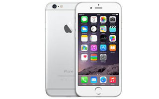

iPHONE 6 PLUS
 The iPhone 6 was a phone we all expected to see for the last two years. But only recently did I really start to think Apple might join the phablet race too. The new iPhone 6 Plus is a phone that might not make a lot of sense to some people - after all, it's basically the iPhone 6 with a larger screen and a better battery, but at the expense of pocketability.